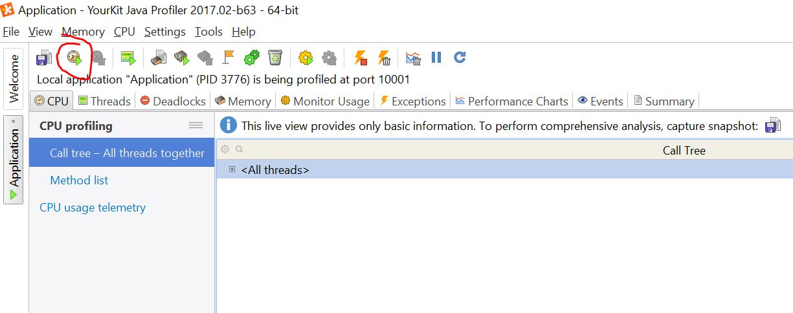
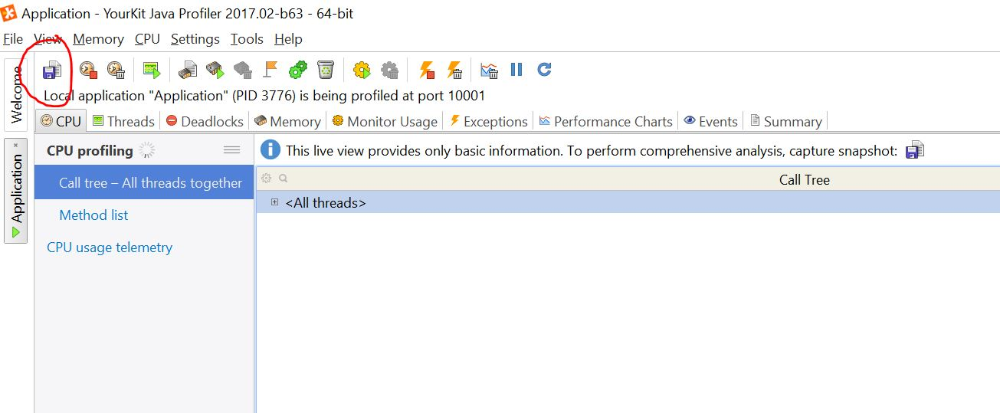
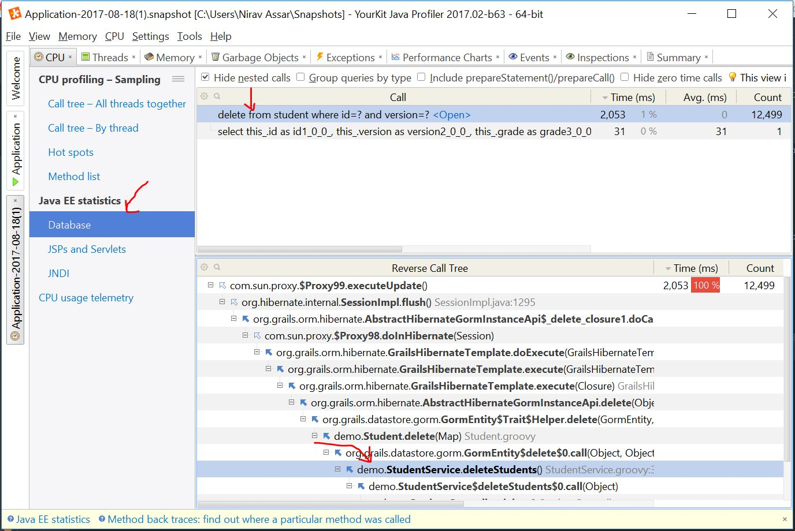

@Transactional
void deleteStudentsWithGradleLessThanA() {
List<Student> students = studentDataService.findByGradeLessThan(A_GRADE)
log.info '#{} students with less than A', students.size()
for (Student s in students) {
s.delete(flush: true)
}
}4 Inefficient Delete
The application has inefficient delete functionality. Upon Delete Students, the application takes an excessive amount of
time to delete students that have grades less that 90. Let’s demonstrate how this can be analyzed with YourKit.
Analyze In Profiler
-
Start CPU Profiling with Sampling option - this tracks method times with low overhead.
-

-
-
Execute
Delete Students. Observe that delete functionality takes a long while. Note the log output to the console has repeated delete hql statements. Pause for about 2-3 minutes while delete takes place. -
Now we must Capture Performance Snapshot. A snapshot view has much more detailed information than the CPU profile. We will be able to dig into the performance statistics of the application. The snapshot will capture statistics from the time the profiler was started till the moment the snapshot was initiated. Once the snapshot is prepared, open it.
-

-
-
Navigate to Java EE Statistics→Database. Here we can see the excessive amount of delete statements made to the database, along with the length of time. In the Reverse Call Tree, we can see the application method call responsible:
demo.StudentService.deleteStudents(). You may right-click and Open in IDE, which will take you directly to the code.-

-
Examine the Code
The code for deleteStudents() finds all students less than A grade. It then proceeds to cycle through each object and
issue a delete statement. Obviously this is responsible for the slowdown.
grails-app/services/demo/StudentService.groovy
Improve the Code
It is much more efficient to simply issue one delete SQL query with a where clause.
We are going to use the GORM Data Service with a delete operations using JPA-QL:
grails-app/services/demo/StudentService.groovy
void deleteStudentsWithGradleLessThanA() {
studentDataService.deleteByGradleLessThan(A_GRADE)
}grails-app/services/demo/StudentDataService.groovy
import grails.gorm.services.Query
import grails.gorm.services.Service
import groovy.transform.CompileStatic
@CompileStatic
@Service(Student)
interface StudentDataService {
...
@Query("delete ${Student student} where $student.grade <= $grade")
void deleteByGradleLessThan(BigDecimal grade)
}
...
}Now that the code improvement is made, we should restart the application with the profiler. Repeat Insert Students again. Repeat the steps in
Analyze in Profiler and observe the database delete call get reduced to 1.